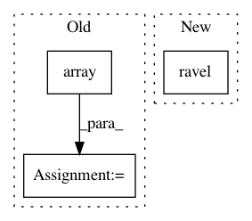

b4bfb0de9c7237c9d404d5565f6d77c21bec5b48,skimage/morphology/watershed.py,,watershed,#Any#Any#Any#Any#Any#Any#,149
Before Change
c_image = image.astype(np.float64)
c_mask = np.ascontiguousarray(mask, dtype=np.int8).ravel()
c_output = np.array(markers, dtype=np.int32).ravel()
flat_neighborhood = _compute_neighbors(image, c_connectivity, offset)
marker_locations = np.flatnonzero(markers).astype(np.int32)
After Change
// keep from running off the edges
pad_width = [(p, p) for p in offset]
image = np.pad(image, pad_width, mode="constant")
mask = np.pad(mask, pad_width, mode="constant").ravel()
output = np.pad(markers, pad_width, mode="constant")
flat_neighborhood = _compute_neighbors(image, connectivity, offset)
marker_locations = np.flatnonzero(output).astype(np.int32)
In pattern: SUPERPATTERN
Frequency: 3
Non-data size: 3
Instances
Project Name: scikit-image/scikit-image
Commit Name: b4bfb0de9c7237c9d404d5565f6d77c21bec5b48
Time: 2016-08-24
Author: juan.n@unimelb.edu.au
File Name: skimage/morphology/watershed.py
Class Name:
Method Name: watershed
Project Name: AIRLab-POLIMI/mushroom
Commit Name: f2cfa5fb8e73229a1757acbcc94bab13099de439
Time: 2017-06-05
Author: carlo.deramo@gmail.com
File Name: PyPi/utils/parameters.py
Class Name: Parameter
Method Name: __call__
Project Name: jonathf/chaospy
Commit Name: 272f235fd8418eae67631d62051084eb363f781b
Time: 2020-11-05
Author: jonathf@users.noreply.github.com
File Name: chaospy/descriptives/percentile.py
Class Name:
Method Name: Perc